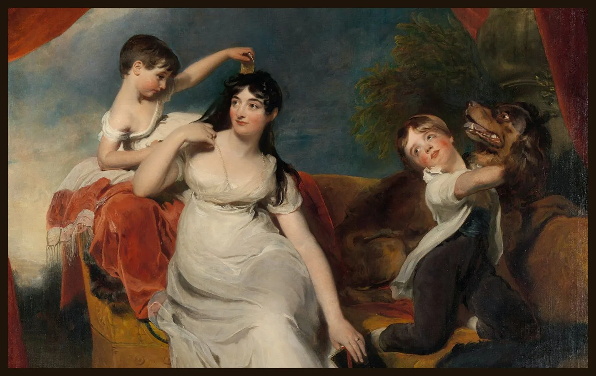

Our Online Guide Offers You a Virtual Tour
Explore More
Engage with the rich symbolism, meticulous details, and profound narratives that characterise Renaissance art, and unlock the secrets hidden within each stroke of the brush.
Watch the clip
Maria Mathilda Bingham (1810)